A showcase on how the design is applied throughout the user-interface.
The Development Plan is one of the core areas of Compass. This is where Development Activities assigned to a person are viewed and maintained. Participants and Supervisors primarily use this area for keeping track of activities assigned to Participants.
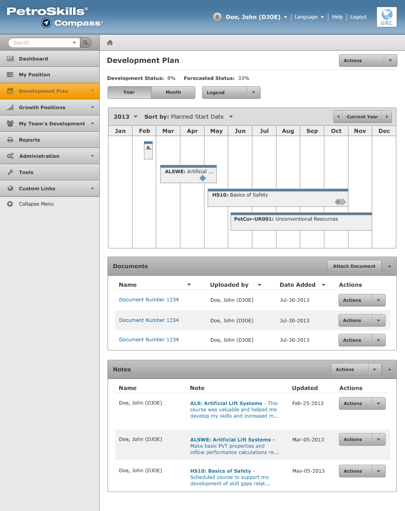
The Development Plan consists of three areas:
The calendar is a major feature of the development plan. It has two view types:
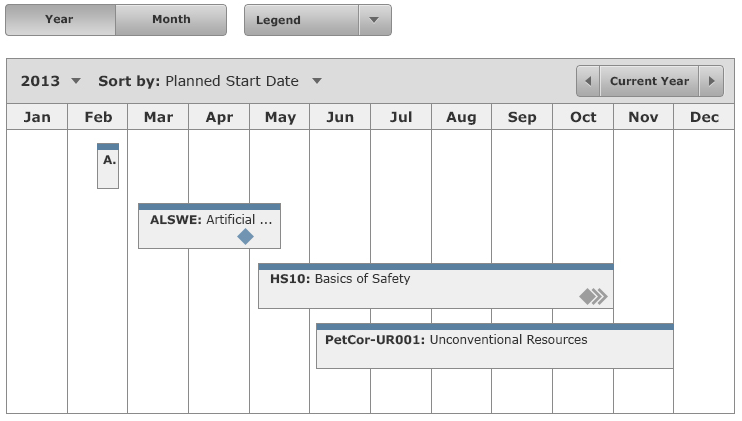
Year View
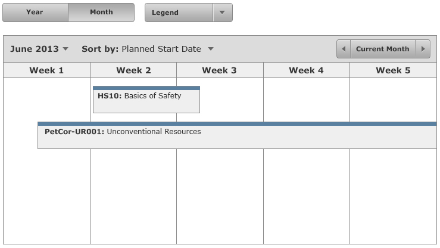
Month View
The view types can be changed by the view type button group. The Year view is the default option.
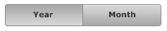
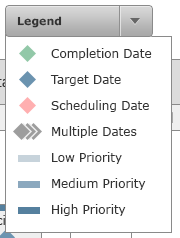
The Legend chart is a dropdown button that displays color milestones and color priorities that are represented in the calendar.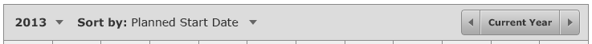
This toolbar is located above the calendar. It provides functionality that allows the user to navigate to a particular year or sort by criteria.
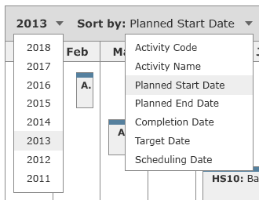
Possible options for the controls displayed above.
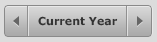
The calendar navigator allows you to navigate to previous years or months. The left arrow button will navigate backwards (example: going from 2013 to 2012). The right arrow button will navigate forwards (example: going from 2012 to 2013). The middle button allows the user to quickly get back to the current year or month.
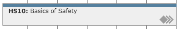
Each activity consists of three components:
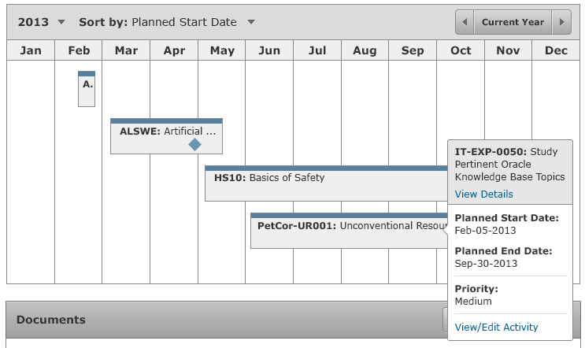
When the user clicks anywhere in the activity (except the milestone), the activity pop-over control shows up. This pop-over displays:
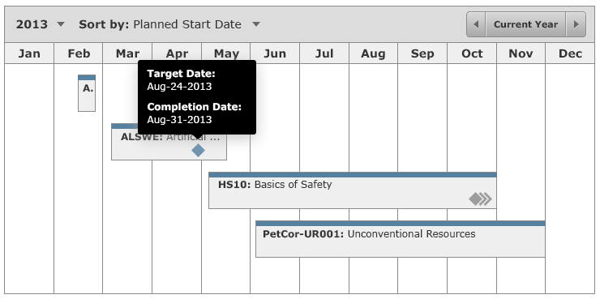
When the user clicks on the milestone, a tooltip shows up and displays the dates and milestone dates that are associated with it.
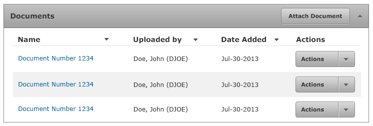
Documents are attachments to the user's development plan. The user can:
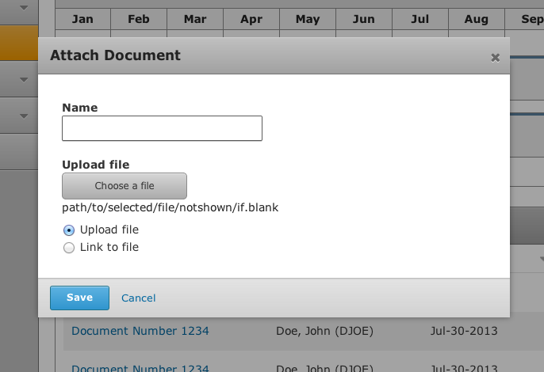
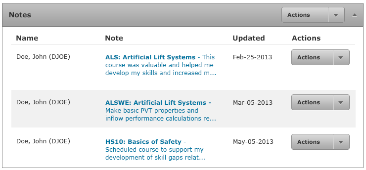
Notes allow users to attach notes to their development plan. The user can do the following actions.
To view the note, the user can click on the Note link.
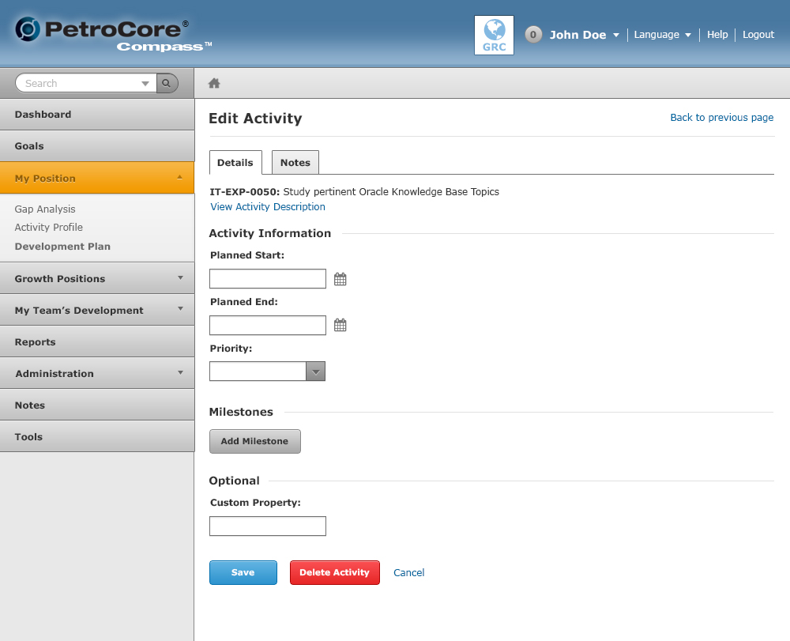
This page is accessible by the user when they click on the [View/Edit Activity] link from the Development Plan Calendar. The controls on this page affect what's shown on the calendar.
The screenshots below show what gets displayed when the user clicks on the [Add Milestone] button.
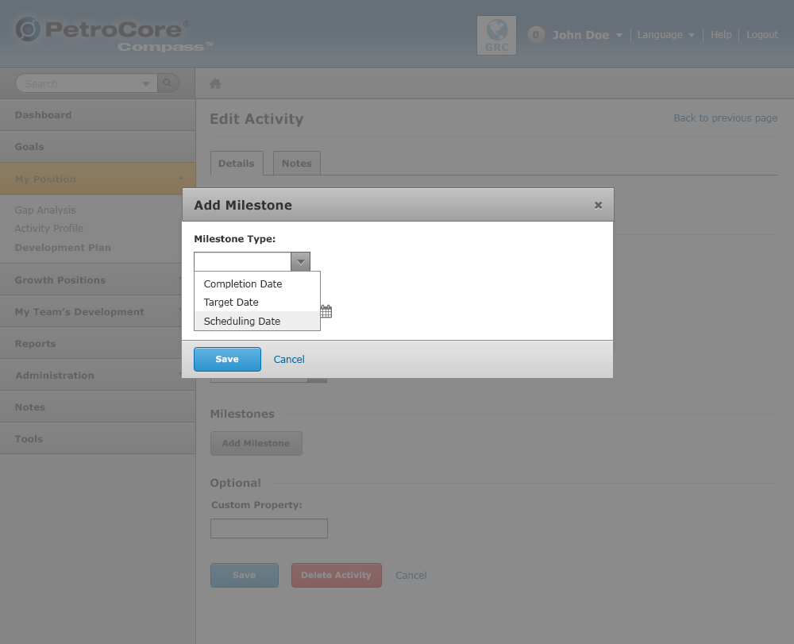
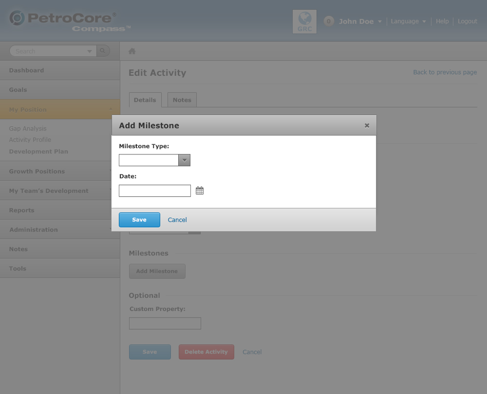
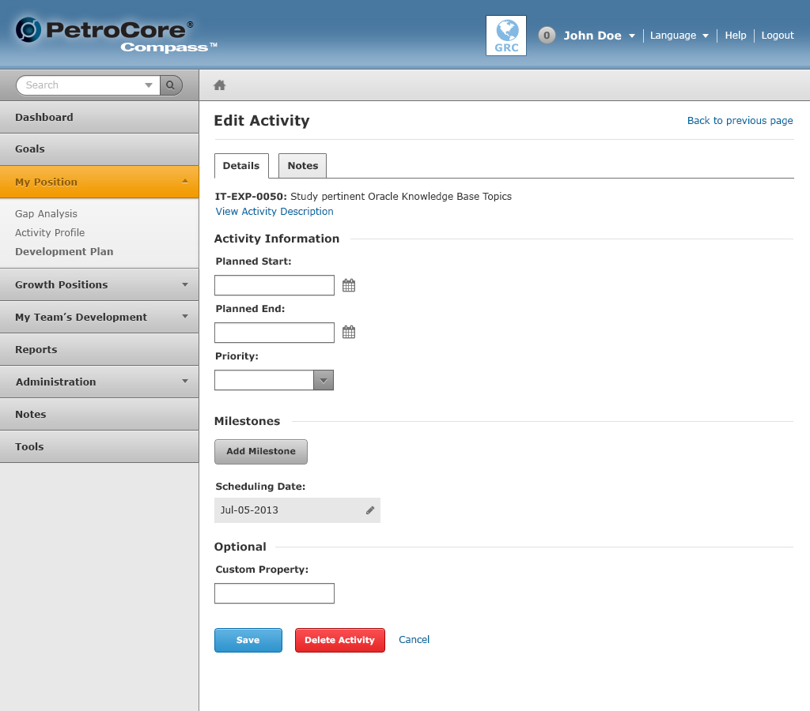
Screenshot showing how a milestone looks like when it's been added.
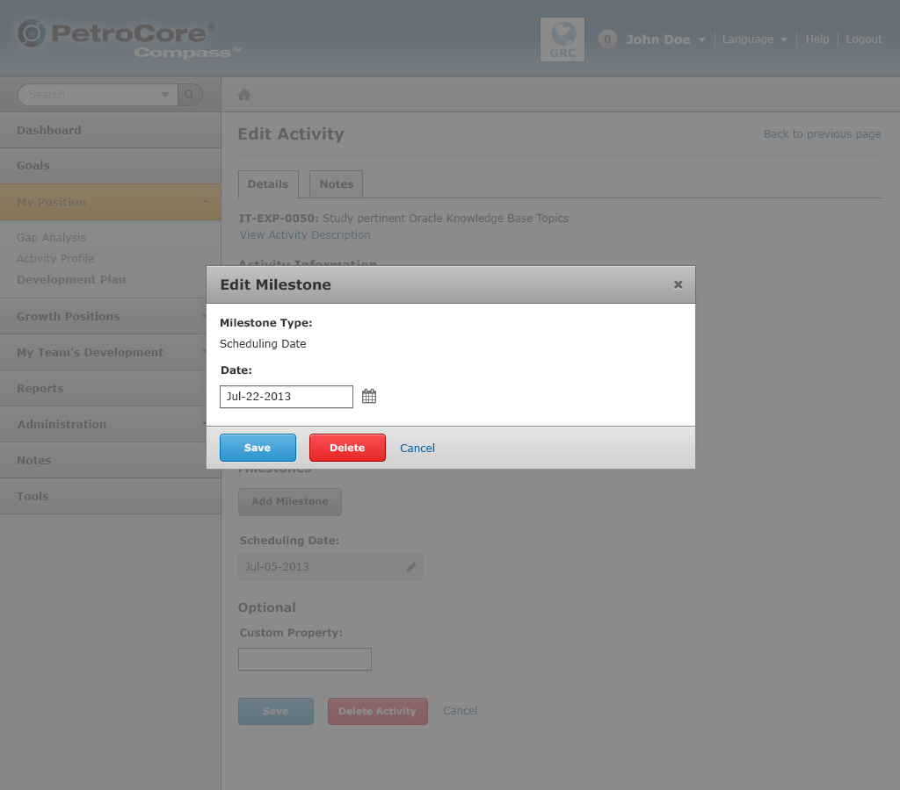
The dates and milestone dates can be edited once they've been added to the development activity.
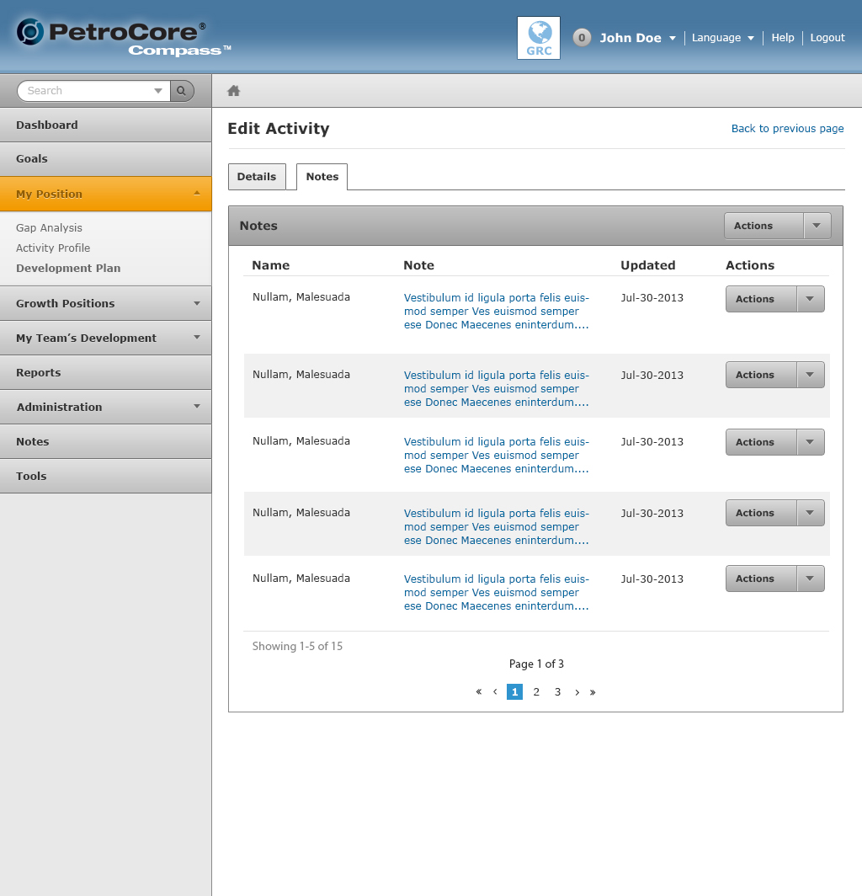
A user can attach notes per development activity. The controls are the same as the Notes on the Development Plan.